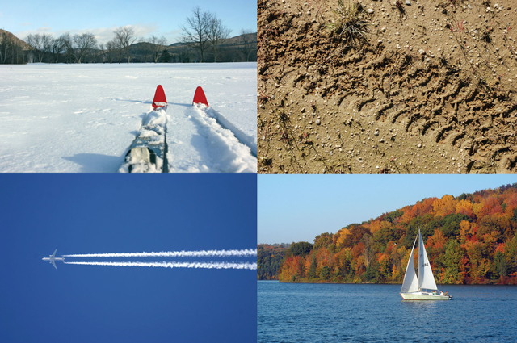
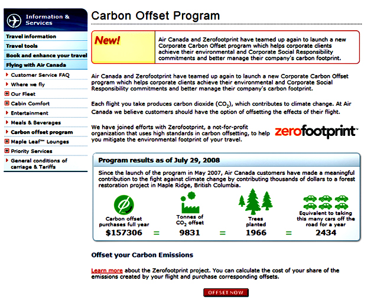

Module 1—Thinking Energy
 Reflect and Connect
Reflect and Connect

top left: © cappi thompson /shutterstock top
right: © Philip Lange /shutterstock
bottom: left: © Scott T. O'Donnell/shutterstock bottom right:
© Alan Freed /shutterstock
All forms of transportation require energy. What forms of energy and energy sources are necessary in the forms of transportation shown in the graphic? What relationship do these forms of energy have to the sun? If you were to go on an ecotour of your local area, which forms of transportation would best fit your tour's needs? Why would you have to rely on those forms of energy? Is there a way to make transportation in your area less harmful to the environment?
Reflect on the Big Picture
Ecotourism provides an opportunity to preserve natural areas by
promoting sustainable travel. Ecotourists want to learn and experience
the resources of an area but do not want to adversely affect the area's
environment.
 Try This
Try This
Buying carbon offsets has become an option for many travellers.

© Air Canada 2007
TR 3. What is a carbon offset?
TR 4. Is offering a traveller the opportunity to purchase a carbon offset consistent with the principles of ecotourism?
TR 5. Does allowing a traveller the opportunity to buy a carbon offset make this person more conscious of society's choices regarding energy use?